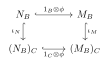

Chapter 3 Rings and Modules of Fractions
3.1
Let \(S\) be a multiplicatively closed subset of a ring \(A\), and let \(M\) be a finitely generated \(A\)-module. Prove that \(S^{-1}M = 0\) if and only if there exists \(s \in S\) such that \(sM = 0\).
Proof: Suppose \(M=(m_{1},\cdots,m_{n})\) is finitely generated, then \(S^{-1}M=0\) implies \(\forall1\leqslant i\leqslant n, \frac{m_{i}}{1}=0\in S^{-1}M\) so there exists \(s_{i}\in S\) such that \(s_{i}m_{i}=0\). Let \(s=s_{1}\cdots s_{n}\), then \(s\in S\) and \(sm_{i}=0\forall 1\leqslant i\leqslant n\), hence \(sM=0\).
The converse is trivial.
3.2
Let \(\mathfrak{a}\) be an ideal of a ring \(A\), and let \(S = 1 + \mathfrak{a}\). Show that \(S^{-1}\mathfrak{a}\) is contained in the Jacobson radical of \(S^{-1}A\).
Use this result and Nakayama's lemma to give a proof of (2.5) which does not depend on determinants.
Proof: Clearly \(S\) is multiplicative. For any \(\frac{a}{s }\in S^{-1}\mathfrak{a}\) and \(\frac{t}{s^{\prime}}\in S^{-1}A\), \(ss^{\prime}+ta\in S+\mathfrak{a}\subset S\) so \(1+\frac{t}{s^{\prime}} \frac{a}{s}\) has an inverse \(\frac{ss^{\prime}}{ss^{\prime}+ta}\in S^{-1}A\). Hence \(S^{-1}\mathfrak{a}\subset \mathfrak{R}(S^{-1}A)\).
If \(M\) is a finitely generated \(A-\)module and \(\mathfrak{a}\subset A\) satisfy \(\mathfrak{a}M=M\), then \(S^{-1}M=(S^{-1}\mathfrak{a})(S^{-1}M)\) where \(S^{-1}\mathfrak{a}\subset \mathfrak{R}(S^{-1}A)\). By Nakayama's lemma \(S^{-1}M=0\), so by Exercise3.1 \(sM=0\) for some \(s \in S\). By definition \(s\equiv 1\pmod {\mathfrak{a}}\).
3.3
Let \(A\) be a ring, let \(S\) and \(T\) be two multiplicatively closed subsets of \(A\), and let \(U\) be the image of \(T\) in \(S^{-1}A\). Show that the rings \((ST)^{-1}A\) and \(U^{-1}(S^{-1}A)\) are isomorphic.
Proof: For any ring homomorphism \(\varphi:A\to B\) that maps elements of \(ST\) to units, by the universal property there is a unique \(\tilde{\varphi}:S^{-1}A\to B\) such that \(\tilde{\varphi}\iota_{1}=\varphi\). Then \(\tilde{\varphi}\) maps elements of \(U=\iota_{1}(T)\) to units in \(B\), so there is a unique \(\overline{\varphi}:U^{-1}(S^{-1}A)\to B\) such that \(\bar{\varphi}\iota_{2}=\tilde{\varphi}\), which implies \(\bar{\varphi}(\iota_{2}\iota_{1})=\varphi\). If \(\phi:U^{-1}(S^{-1}A)\to B\) also satisfy \(\phi(\iota_{2}\iota_{1})=\varphi\), then by uniqueness \(\phi\iota_{2}=\tilde{\varphi i}\) and \(\phi=\bar{\varphi}\). Therefore \((ST)^{-1}A\cong U^{-1}(S^{-1}A)\).
3.4
Let \(f : A \to B\) be a homomorphism of rings and let \(S\) be a multiplicatively closed subset of \(A\). Let \(T = f(S)\). Show that \(S^{-1}B\) and \(T^{-1}B\) are isomorphic as \(S^{-1}A\)-modules.
Proof: Consider \(\tilde{f}:S^{-1}B\to T^{-1}B\) be the homomorphism induced by \(f\times 1_{B}:S\times B\to T\times B,(s,b)\mapsto(f(s),b)\). We can verify that \(f\times 1_{B}\) keeps the equivalence relation, so \(\tilde{f}(b /s)=b /f(s)\) is a well-defined homomorphism of rings. For \(a /s^{\prime}\in S^{-1}A\), \(\tilde{f}\left( \frac{a}{s^{\prime}} \frac{b}{s} \right)=\tilde{f}\left( \frac{f(a)b}{s^{\prime}s} \right)=\frac{f(a)}{f(s^{\prime})} \frac{b}{f(s)}=\frac{a}{s^{\prime}}\cdot \frac{b}{f(s)}\), so \(\tilde{f}\) is a \(S^{-1}A-\)module homomorphism.
If \(b /s\in n\mathrm{Ker}\tilde{f}\) then \(tb=0\) for some \(t\in T\). Take \(s^{\prime}\in f^{-1}(t)\) then \(s^{\prime}b=tb=0\) so \(\frac{b}{s}=0\). Clearly \(\tilde{f}\) is surjective, so \(\tilde{f}\) Is an isomorphism \(S^{-1}B\cong T^{-1}B\).
3.5
Let \(A\) be a ring. Suppose that, for each prime ideal \(\mathfrak{p}\), the local ring \(A_{\mathfrak{p}}\) has no nilpotent element \(\ne 0\). Show that \(A\) has no nilpotent element \(\ne 0\). If each \(A_{\mathfrak{p}}\) is an integral domain, is \(A\) necessarily an integral domain?
Proof: If \(a^{n}=0\) for \(a\in A\) then \(\left( \frac{a}{1} \right)^{n}=0\) in \(A_{\mathfrak{p}}\) so \(\frac{a}{1}=0\in A_{\mathfrak{p}}\) and \(ab=0\) for some \(b\not\in \mathfrak{p}\). If \(a\neq 0\), take a maximal ideal \(\mathfrak{m}\supset Ann(a)\) then \(\mathfrak{m}\) is prime, and there are no \(b\not\in \mathfrak{m}\) such that \(ab=0\), a contradiction. (Or note that \(\mathfrak{N}(A_{\mathfrak{p}})=\mathfrak{N}(A)_{\mathfrak{p}}\) and recall that the property \(A=0\) is local.)
However, even if each \(A_{\mathfrak{p}}\) is an integral domain, consider \(A=\mathbb{Z}_{6}\) then \(A\) is not an integral domain but \(A_{(2)},A_{(3)}\) are both integral domains. Or consider \(A=\mathbb{R}^{2}\), then \(\mathfrak{p}=\mathbb{R}\times 0,0\times \mathbb{R}\), so \(A_{\mathfrak{p}}\cong \mathbb{R}\) is an integral domain, but \(A\) is not an integral domain.
3.6
Let \(A\) be a ring \(\ne 0\) and let \(\Sigma\) be the set of all multiplicatively closed subsets \(S\) of \(A\) such that \(0 \notin S\). Show that \(\Sigma\) has maximal elements, and that \(S \in \Sigma\) is maximal if and only if \(A - S\) is a minimal prime ideal of \(A\).
See Exercise1.8.
3.7
A multiplicatively closed subset \(S\) of a ring \(A\) is said to be saturated if
$$
xy \in S \Leftrightarrow x \in S \text{ and } y \in S.
$$
Prove that
i) \(S\) is saturated \(\Leftrightarrow A - S\) is a union of prime ideals.
ii) If \(S\) is any multiplicatively closed subset of \(A\), there is a unique smallest saturated multiplicatively closed subset \(\bar{S}\) containing \(S\), and that \(\bar{S}\) is the complement in \(A\) of the union of the prime ideals which do not meet \(S\). (\(\bar{S}\) is called the saturation of \(S\).)
If \(S = 1 + \mathfrak{a}\), where \(\mathfrak{a}\) is an ideal of \(A\), find \(\bar{S}\).
Proof: (i) Assume \(A-S=\bigcup_{i\in I}\mathfrak{p}_{i}\), if \(xy\in S\) and \(x,y\not\in S\), suppose \(x\in \mathfrak{p}_{i}\), then \(xy\in \mathfrak{p}_{i}\subset A- S\), a contradiction.
If \(S\) is saturated, we show that \(A-S=\bigcup_{\mathfrak{p}\cap S=\emptyset}\mathfrak{p}\), or equivalently \(S^{-1}(A-S)=\bigcup_{\mathfrak{q}}\mathfrak{q}=\{ a\in S^{-1}A:a\text{ nonunit} \}\): Clearly \(S^{-1}S\) consists of units. If \(\frac{a}{s}\in S^{-1}(A-S)\) has an inverse \(\frac{b}{t}\), then \(s^{\prime}(ab-st)=0\) for some \(s^{\prime}\in S\), so \(s^{\prime}ab=s^{\prime}st\in S\) which implies \(a\in S\), a contradiction. Hence \(S^{-1}(A-S)=\{ a\in S^{-1}A:a\text{ nonunit} \}=\bigcup_{\mathfrak{q}}\mathfrak{q}\) and \(S^{-1}S=\{ a\in S^{-1}A:a\text{ unit} \}\). Therefore \(A-S=\left( \bigcup_{\mathfrak{q}}\mathfrak{q} \right)^{c}=\bigcup_{\mathfrak{p}\cap S=\emptyset}\mathfrak{p}\).
(ii) By (i) \(\overline{S}=A-\left( \bigcup_{\mathfrak{p}\cap S=\emptyset}\mathfrak{p} \right)\) is saturated. If \(T\supset S\) is saturated, \(T=A-\left( \bigcup_{\mathfrak{p}\cap T=\emptyset}\mathfrak{p} \right)\supset \overline{S}\). Hence \(\overline{S}\) is minimal.
If \(S=1+\mathfrak{a}\), then \(\overline{S}=A-\bigcup_{\mathfrak{m}\supset \mathfrak{a}}\mathfrak{m}\).
3.8
Let \(S, T\) be multiplicatively closed subsets of \(A\), such that \(S \subseteq T\). Let \(\phi : S^{-1}A \to T^{-1}A\) be the homomorphism which maps each \(a/s \in S^{-1}A\) to \(a/s\) considered as an element of \(T^{-1}A\). Show that the following statements are equivalent:
i) \(\phi\) is bijective.
ii) For each \(t \in T\), \(t/1\) is a unit in \(S^{-1}A\).
iii) For each \(t \in T\) there exists \(x \in A\) such that \(xt \in S\).
iv) \(T\) is contained in the saturation of \(S\) (Exercise 7).
v) Every prime ideal which meets \(T\) also meets \(S\).
Proof: (ii)=>(i) if for each \(t\in T\), \(t /1\) is a unit in \(S^{-1}A\), then \(\iota_{1} 1_{A}\) maps \(t\) to units of \(S^{-1}A\), so it induces a unique homomorphism \(\psi:T^{-1}A\to S^{-1}A\) such that \(\psi\iota_{2}=\iota_{1}1_{A}\). By uniqueness \(\psi\phi=1_{S^{-1}A}\) and \(\phi\psi= 1_{T^{-1}A}\), so \(\phi\) is bijective.
(iii)=>(ii) For each \(t\in T\), take \(x\in A\) such that \(xt\in S\), then \(t /1\) has an inverse \(x /xt\in S^{-1}A\), so it is a unit.
(iv)=>(iii) Let \(S^{\prime}=\{ a\in A: \exists x\in A,ax\in S \}\), we show that \(\overline{S}\subset S^{\prime}\), which implies (iii). If \(a\in S\), then \(a^{2}\in S\) so \(a\in S^{\prime}\). If \(a,b\in S^{\prime}\), suppose \(ax,by\in S\), then \((ab)(xy)=(ax)(by)\in S\) so \(ab\in S^{\prime}\) and \(S^{\prime}\) is multiplicative. If \(ab\in S^{\prime}\), suppose \(abx\in S\), then \(a(bx)=b(ax)\in S\) implies \(a,b\in S^{\prime}\), so \(S^{\prime}\) is saturated. Hence \(\overline{S}\subset S^{\prime}\) so \(T\subset S^{\prime}\). (Obviously \(\overline{S}=S^{\prime}\)).
(v)=>(iv) by definition, \(T\subset \overline{T}=A-\bigcup_{\mathfrak{p}\cap T=\emptyset}\mathfrak{p}\subset \overline{S}=A-\bigcup_{\mathfrak{p}\cap S=\emptyset}\mathfrak{p}\).
(i)=>(v) If \(\mathfrak{p}\cap T\neq \emptyset\) but \(\mathfrak{p}\cap S=\emptyset\), then \(S^{-1}\mathfrak{p}\subset S^{-1}A\) is prime, so \(\phi(S^{-1}\mathfrak{p})\) is prime. However, take \(t\in \mathfrak{p}\cap T\), then \(\frac{t}{1}\in \phi(S^{-1}\mathfrak{p})\) but \(\frac{t}{1}\) is a unit in \(T^{-1}A\), a contradiction.
3.9
The set \(S_0\) of all non-zero-divisors in \(A\) is a saturated multiplicatively closed subset of \(A\). Hence the set \(D\) of zero-divisors in \(A\) is a union of prime ideals (see Chapter 1, Exercise 14). Show that every minimal prime ideal of \(A\) is contained in \(D\).
The ring \(S_0^{-1}A\) is called the total ring of fractions of \(A\). Prove that
i) \(S_0\) is the largest multiplicatively closed subset of \(A\) for which the homomorphism \(A \to S_0^{-1}A\) is injective.
ii) Every element in \(S_0^{-1}A\) is either a zero-divisor or a unit.
iii) Every ring in which every non-unit is a zero-divisor is equal to its total ring of fractions (i.e., \(A \to S_0^{-1}A\) is bijective).
Proof: Note that \(S_{0}\) is contained in every maximal multiplicative set \(S\), otherwise \(S_{0}S\) is strictly larger, so \(D\) contains every minimal prime ideal.
(i) For any \(a\in \mathrm{Ker}\iota\) where \(\iota:A\to S^{-1}A\), \(sa=0\) for some \(s \in S\), so \(\mathrm{Ker}\iota=0\iff S\subset S_{0}\).
(ii) For any \(a /s \in S_{0}^{-1}A\), if \(a\in S_{0}\) then \(a /s\) has inverse \(s /a\) so it is a unit. Otherwise \(a\in A-S_{0}=D\) is a zero divisor, take \(ab=0\in A\), then \(a /s\cdot b /1=0\in S_{0}^{-1}A\) so \(a /s\) is a zero divisor.
(iii) Consider \(\iota:A\to S_{0}^{-1}A,a\mapsto a /1\), then by (i) \(\iota\) is injective, and if \(a /s \in S_{0}^{-1}A\), then \(s \in S_{0}\) is a non zero-divisor, so \(s\) is a unit, and \(a /s=\iota(as^{-1})\). Therefore \(\iota\) is bijective and \(A\cong S_{0}^{-1}A\).
3.10
Let \(A\) be a ring.
i) If \(A\) is absolutely flat (Chapter 2, Exercise 27) and \(S\) is any multiplicatively closed subset of \(A\), then \(S^{-1}A\) is absolutely flat.
ii) \(A\) is absolutely flat iff \(A_{\mathfrak{m}}\) is a field for each maximal ideal \(\mathfrak{m}\).
Proof: (i) If \(M\) is a \(S^{-1}A-\)module, then \(M\) is flat as a \(A-\)module, denoted as \(M|_{A}\). Consider \(S^{-1}M|_{A}\), then \(\psi:M\to S^{-1}M|_{A},m\mapsto m /1\) is a well-defined \(S^{-1}A-\)isomorphism: for \(m /s \in S^{-1}M\), \(\frac{1}{s}m\) is well-defined, so \(\psi\left( \frac{1}{s}m \right)=m /s\) and \(\psi\) is surjective; if \(\psi(m)=0\) then \(sm=0\) for some \(s \in S\), so \(m=\frac{1}{s}sm=0\) and \(\psi\) is injective; clearly \(\psi\) is a homomorphism of groups, and \(\psi\left( \frac{a}{s}m \right)=\frac{a}{s} \frac{m}{1}=\frac{a}{s}\psi(m)\) so \(\psi\) is an \(S^{-1}A-\)module homomorphism.
If \(\phi:N^{\prime}\to N\) is injective, we show that \(\phi \otimes 1_{M}:N^{\prime}\otimes_{S^{-1}A}M\to N\otimes_{S^{-1}A}M\) is injective: note that \(N^{\prime}\otimes_{S^{-1}A}M=S^{-1}N^{\prime}|_{A}\otimes_{S^{-1}A}S^{-1}M|_{A}=S^{-1}(N^{\prime}|_{A}\otimes_{A}M|_{A})\) by the previous part, and \(N^{\prime}|_{A}\otimes_{A}M|_{A}\to N|_{A}\otimes_{A}M|_{A}\) is injective since \(A\) is absolutely flat. Since localization keeps exactness, \(S^{-1}(N^{\prime}|_{A}\otimes_{A}M|_{A})\to S^{-1}(N|_{A}\otimes_{A}M|_{A})\) is also injective.
(ii) The only if part is shown in (i). For (ii), use Theorem3.10 and the fact that all module of a field are free, hence flat.
3.11
Let \(A\) be a ring. Prove that the following are equivalent:
i) \(A/\mathfrak{N}\) is absolutely flat (\(\mathfrak{N}\) being the nilradical of \(A\)).
ii) Every prime ideal of \(A\) is maximal.
iii) \(\operatorname{Spec}(A)\) is a \(T_1\)-space (i.e., every subset consisting of a single point is closed).
iv) \(\operatorname{Spec}(A)\) is Hausdorff.
If these conditions are satisfied, show that \(\operatorname{Spec}(A)\) is compact and totally disconnected (i.e. the only connected subsets of \(\operatorname{Spec}(A)\) are those consisting of a single point).
Proof: (iv)=>(iii) is trivial. (iii)=>(ii): If \(\mathfrak{p}\) is a non-maximal prime ideal, take a maximal ideal \(\mathfrak{m}\) containing \(\mathfrak{p}\), then for any \(\mathfrak{p}\in V(I)\) where \(I\subset A\), \(I\subset \mathfrak{p}\subset \mathfrak{m}\) so \(\mathfrak{m}\in V(I)\). Hence \(\mathrm{Spec}(A)\) is not T1, a contradiction.
(ii)<=>(i) We show that \((A /\mathfrak{N})_{\mathfrak{m}}\) is a field for every maximal ideal \(\mathfrak{m}\subset A /\mathfrak{N}\), then by Exercise3.10 \(A /\mathfrak{N}\) is absolutely flat. If \((A /\mathfrak{N})_{\mathfrak{m}}\) has a non-zero prime ideal \(\mathfrak{p}\subset(A /\mathfrak{N})_{\mathfrak{m}}\), then \(\mathfrak{p}\) corresponds to a prime ideal \(\mathfrak{q}\subsetneq \mathfrak{m}\) such that \(\mathfrak{N}\subsetneq \mathfrak{q}\). Hence \(\mathfrak{q}\) is a non-maximal prime ideal, a contradiction. The converse is analogous.
(i)=>(iv) By Exercise2.27, \(A /\mathfrak{N}\) is absolutely flat implies every principle ideal is idempotent. For any \(x\neq y\in \mathrm{Spec}(A)\), by (i)=>(ii) they are both maximal ideals, so \(\mathfrak{p}_{x}+\mathfrak{p}_{y}=(1)\). Take \(a\in \mathfrak{p}_{x}\) and \(b\in \mathfrak{p}_{y}\) such that \((a)+(b)=1\), and idempotent elements \(e\in(a),g\in(b)\) that generate \((a),(b)\). Let \(f=(1-e)g\), then \(x\in X_{f}\) and \(y\in X_{e}\), while \((f)+(e)=1\) since \(g=f+eg\in(f,e)\). Hence we obtain disjoint open neighborhoods \(X_{f},X_{e}\), and \(\mathrm{Spec}(A)\) is indeed Hausdorff.
3.12
Let \(A\) be an integral domain and \(M\) an \(A\)-module. An element \(x \in M\) is a torsion element of \(M\) if \(\operatorname{Ann}(x) \ne 0\), that is if \(x\) is killed by some non-zero element of \(A\). Show that the torsion elements of \(M\) form a submodule of \(M\). This submodule is called the torsion submodule of \(M\) and is denoted by \(T(M)\). If \(T(M) = 0\), the module \(M\) is said to be torsion-free. Show that
i) If \(M\) is any \(A\)-module, then \(M/T(M)\) is torsion-free.
ii) If \(f : M \to N\) is a module homomorphism, then \(f(T(M)) \subseteq T(N)\).
iii) If \(0 \to M' \to M \to M''\) is an exact sequence, then the sequence \(0 \to T(M') \to T(M) \to T(M'')\) is exact.
iv) If \(M\) is any \(A\)-module, then \(T(M)\) is the kernel of the mapping \(\iota:x \mapsto 1 \otimes x\) of \(M\) into \(K \otimes_A M\), where \(K\) is the field of fractions of \(A\).
Proof: If \(x,y\in T(M)\), suppose \(ax=by=0\) where \(a,b\neq 0\), then \(ab\neq 0\) and \(ab(x-y)=0\) so \(x-y\in T(M)\) and it is a subgroup. If \(x\in T(M)\) and \(a\in A\), suppose \(bx=0\) for \(b\neq 0\), then \(b(ax)=a(bx)=0\) so \(ax\in T(M)\). Hence \(T(M)\) is a sub-module.
(i) If \(m+T(M)\in M /T(M)\) is a torsion element, take \(a\in A\) such that \(a\neq 0\) and \(a(m+T(M))=0\), then \(am\in T(M)\) implies \(b(am)=0\) for some \(b\neq 0\). Hence \(abm=0\) so \(m\in T(M)\), and therefore \(M /T(M)\) is torsion free.
(ii) If \(m\in M\) is a torsion element, suppose \(am=0\) for \(a\neq 0\), then \(a(f(m))=f(am)=0\) so \(f(m)\in T(N)\). Hence \(f(T(M))\subset T(N)\).
(iii) Suppose \(f:M^{\prime}\to M\) is injective and \(g:M\to M^{\prime\prime}\) satisfy \(\mathrm{Ker}g=\mathrm{Im}f\). Then \(f|_{T(M^{\prime})}\) is clearly injective, and \(\mathrm{Im}f|_{T(M)}\subset \mathrm{Ker} g|_{T(M)}\). If \(g(m)=0\) for some \(m\in T(M)\), then \(m\in \mathrm{Ker}g=\mathrm{Im}f\) so take \(f(m^{\prime})=m\) where \(m^{\prime}\in M^{\prime}\). Suppose \(am=0\) for some \(a\neq 0\), then \(f(am^{\prime})=am=0\) implies \(am^{\prime}=0\), so \(m^{\prime}\in T(M^{\prime})\) and \(m\in \mathrm{Im}f|_{M^{\prime}}\). Therefore \(\mathrm{Im}f|_{T(M)}=\mathrm{Ker}g|_{T(M)}\) and \(T\) is left exact.
(iv) If \(m\in T(M)\) take \(am=0\) for \(a\neq 0\), then \(1\otimes m=\frac{1}{a}\otimes am=0\) so \(m\in \mathrm{Ker}\iota\).
Recall Theorem3.5 gives an isomorphism \(K\otimes_{A}M\cong S^{-1}M\) where \(S=A\backslash\{ 0 \}\), by \(a /s\otimes m\mapsto am /s\), then it induces \(\tilde{\iota}:x\mapsto x /1\). Hence it is clear that \(m\in \mathrm{Ker}\iota\implies m\in T(M)\).
3.13
Let \(S\) be a multiplicatively closed subset of an integral domain \(A\). In the notation of Exercise 12, show that \(T(S^{-1}M) = S^{-1}(TM)\). Deduce that the following are equivalent:
i) \(M\) is torsion-free.
ii) \(M_{\mathfrak{p}}\) is torsion-free for all prime ideals \(\mathfrak{p}\).
iii) \(M_{\mathfrak{m}}\) is torsion-free for all maximal ideals \(\mathfrak{m}\).
Proof: If \(m /s \in T(S^{-1}M)\), then \(am /s=0\) for some \(a\neq 0\), which implies \(s^{\prime}am=0\) for some \(s^{\prime}\in S\). Since \(s^{\prime}\in S\) which doesn't contain \(0\), \((s^{\prime}a)m=0\) implies \(m\in T(M)\). Consider \(\varphi:T(S^{-1}M)\to S^{-1}(TM),m /s\mapsto m /s\) then \(\varphi\) is well-defined, and clearly surjective. Verify that \(\varphi\) is a \(S^{-1}A-\)module homomorphism. If \(m /s \in \mathrm{Ker}\varphi\) then \(s^{\prime}m=0\) for some \(s^{\prime}\in S\), so \(m /s=s^{\prime}m /s^{\prime}s=0\), hence \(\varphi\) is an isomorphism \(T(S^{-1}M)\cong S^{-1}(TM)\).
(i)(ii)(iii) are equivalent using \(T(M_{\mathfrak{p}})=(T(M))_{\mathfrak{p}}\) and the fact that \(M=0\) is local.
3.14
Let \(M\) be an \(A\)-module and \(\mathfrak{a}\) an ideal of \(A\). Suppose that \(M_{\mathfrak{m}} = 0\) for all maximal ideals \(\mathfrak{m} \supseteq \mathfrak{a}\). Prove that \(M = \mathfrak{a}M\).
Pass to the \(A/\mathfrak{a}\)-module \(M/\mathfrak{a}M\) and use (3.8).
Proof: For any maximal ideal \(\mathfrak{m}\supset \mathfrak{a}\), \(M_{\mathfrak{m}}=0\) implies \(A_{\mathfrak{m}}\otimes_{A}M /\mathfrak{a}M\cong(M /\mathfrak{a}M)_{\mathfrak{m}}=M_{\mathfrak{m}} /\mathfrak{a}M_{\mathfrak{m}}=0\) as \(A_{\mathfrak{m}}-\)modules (hence also as \(A /\mathfrak{a}-\)modules). Note that \((M /\mathfrak{a}M)_{\mathfrak{m} /\mathfrak{a}}\cong(A /\mathfrak{a})_{\mathfrak{m} /a}\otimes_{A /\mathfrak{a}} (M /\mathfrak{a}M)\) as \(A /\mathfrak{a}-\)modules, and \((A /\mathfrak{a})_{\mathfrak{m} /\mathfrak{a}}\cong (A /\mathfrak{a})_{\mathfrak{m}}\) as \(A_{\mathfrak{m}}-\)modules by Exercise3.4. So we only need to show that \((A /\mathfrak{a})_{\mathfrak{m}}\otimes_{A /\mathfrak{a}}(M /\mathfrak{a}M)\cong A_{\mathfrak{m}}\otimes_{A}(M /\mathfrak{a}M)\) as \(A /\mathfrak{a}-\)modules, then \((M /\mathfrak{a}M)_{\mathfrak{m} /\mathfrak{a}}=0\) for every localization of the \(A /\mathfrak{a}-\)module \(M /\mathfrak{a}M\), so \(M /\mathfrak{a}M=0\) and \(M=\mathfrak{a}M\).
Consider \(f:(A /\mathfrak{a})_{\mathfrak{m}}\times(M /\mathfrak{a}M)\to A_{\mathfrak{m}}\otimes_{A}(M /\mathfrak{a}M),(\bar{a} /s,m+\mathfrak{a}M)\mapsto 1 /s\otimes(am+\mathfrak{a}M)\), then if \(a+\mathfrak{a}=b+\mathfrak{a}\), we have \(am+\mathfrak{a}M=bm+\mathfrak{a}M\) so \(f\) is well-defined. Clearly \(f\) is \(A /\mathfrak{a}-\)bilinear, so it induces a \(A /\mathfrak{a}-\)module homomorphism \(\alpha:(A /\mathfrak{a})_{\mathfrak{m}}\otimes_{A /\mathfrak{a}}(M /\mathfrak{a}M)\to A_{\mathfrak{m}}\otimes_{A}(M /\mathfrak{a}M)\) such that \(\alpha(\bar{a} /s⊗ \bar{m})= 1 /s\otimes(am+\mathfrak{a}M)\). Likewise we take a \(A-\)module homomorphism \(\beta:A_{\mathfrak{m}}\otimes_{A}(M /\mathfrak{a}M)\to(A /\mathfrak{a})_{\mathfrak{m}}\otimes_{A /\mathfrak{a}}(M /\mathfrak{a}M)\) such that \(\beta\left( \frac{a}{s}⊗ \bar{m} \right)=1 /s \otimes (am+\mathfrak{a}M)\), and verify that \(\alpha\beta=1,\beta\alpha=1\). Hence \((A /\mathfrak{a})_{\mathfrak{m}}\otimes_{A /\mathfrak{a}}(M /\mathfrak{a}M)\cong A_{\mathfrak{m}}\otimes_{A}(M /\mathfrak{a}M)\) as \(A /\mathfrak{a}-\)modules.
3.15
Let \(A\) be a ring, and let \(F\) be the \(A\)-module \(A^n\). Show that every set of \(n\) generators of \(F\) is a basis of \(F\).
Deduce that every set of generators of \(F\) has at least \(n\) elements.
Proof: Suppose \(x_{1},\cdots,x_{n}\) generates \(F=A^{n}\), and consider \(\phi:F\to F,\phi(e_{i})=x_{i}\), then \(\phi\) is surjective. \(F\) is free so it is a projective module, hence the exact sequence \(0\to \mathrm{Ker}\phi\to F\to F\to 0\) splits, and there exists \(h:F\to F\) such that \(1_{F}=\phi h\). Hence the matrices \(M,N\) of \(\phi ,h\) under the standard basis satisfy \(MN=I\), so \(\det M\cdot \det N=1\) and \(\det M\) is a unit. Thus \(M\) is invertible in \(A^{n\times n}\), \(\phi\) is an isomorphism and \(x_{1},\cdots,x_{n}\) for a basis of \(F\).
If a set of generators of \(F\) has less then \(n\) elements, add some zeros, then they form a basis of \(F\), a contradiction.
Another proof: Likewise take \(\phi:F\to F\). View \(F\) as an \(A[x]-\)module by defining \(f\cdot v=f(\phi)v\), then \(F=A^{n}\) is a finitely generated \(A[x]-\)module, and \(\phi\) is surjective implies \(\mathfrak{a}=(x)\) satisfy \(\mathfrak{a}F=F\). By Hamilton-Cayley applied to \(1_{F}\), there exists \(r\in A[x]\) such that \(rF=0\) and \(r\equiv 1\pmod{\mathfrak{a}}\). Let \(r=1-xf\), then \(\phi\) has an inverse \(f(\phi)\), so \(\phi\) is an isomorphism.
The proof from hint: Take \(\phi:F\to F\). By (3.9) we may assume that \(A\) is a local ring. Let \(N\) be the kernel of \(\phi\) and let \(k = A/\mathfrak{m}\) be the residue field of \(A\). Since \(F\) is a flat \(A\)-module, the exact sequence \(0 \to N \to F \to F \to 0\) gives an exact sequence \(0 \longrightarrow k \otimes N \longrightarrow k \otimes F \xrightarrow{1 \otimes \phi} k \otimes F \longrightarrow 0\). Now \(k \otimes F = k^n\) is an \(n\)-dimensional vector space over \(k\); \(1 \otimes \phi\) is surjective, hence bijective, hence \(k \otimes N = 0\). Also \(N\) is finitely generated, by Chapter 2, Exercise 12, hence \(N = 0\) by Nakayama's lemma. Hence \(\phi\) is an isomorphism.
3.16
Let \(B\) be a flat \(A\)-algebra. Then the following conditions are equivalent:
i) \(\mathfrak{a}^{ec} = \mathfrak{a}\) for all ideals \(\mathfrak{a}\) of \(A\).
ii) \(\operatorname{Spec}(B) \to \operatorname{Spec}(A)\) is surjective.
iii) For every maximal ideal \(\mathfrak{m}\) of \(A\) we have \(\mathfrak{m}^e \ne (1)\).
iv) If \(M\) is any non-zero \(A\)-module, then \(M_B \ne 0\).
v) For every \(A\)-module \(M\), the mapping \(x \mapsto 1 \otimes x\) of \(M\) into \(M_B\) is injective.
\(B\) is said to be faithfully flat over \(A\).
Proof: (i)=>(ii) For any \(\mathfrak{p}\in \mathrm{Spec}(A)\), \(\mathfrak{p}^{ec}=\mathfrak{p}\) so by Theorem3.16 it is the contraction of a prime ideal in \(\mathrm{Spec}(B)\).
(ii)=>(iii) is trivial, since \(\mathfrak{m}=\mathfrak{q}^{c}\) implies \(\mathfrak{m}^{e}=\mathfrak{q}^{ce}\subset \mathfrak{q}\subsetneq(1)\).
(iii)=>(iv) Take any nonzero \(x\in M\), and consider \(\mathfrak{a}=\{ a\in A:ax=0 \}\), then \(\mathfrak{a}\to A\to M\) is exact where \(f:A\to M,a\mapsto ax\) and \(\iota :\mathfrak{a}\to A,a\mapsto a\). Since \(B\) is flat, \(B\otimes_{A}\mathfrak{a}\to B\otimes_{A}A\to M_B\) is exact, so we only need to show \(1_{B} \otimes\iota\) is not surjective. Note that \(b\otimes a=ab\otimes 1\), so the image is contained in \(\{ b\otimes 1:b\in \mathfrak{a}^{e} \}\) which does not contain \(1\otimes 1\) since \(1\not\in \mathfrak{a}^{e}\). Hence \(\mathrm{Ker}(1\otimes f)\neq B\otimes_{A}A\) so \(M_{B}\neq 0\).
(iv)=>(v) If \(\iota:M\to M_{B},x\mapsto 1\otimes x\) has kernel \(M^{\prime}\), then \(0\to M^{\prime}\to M\to M_{B}\) is exact, so \(0\to M^{\prime}_{B}\to M_{B}\to B\otimes_{A}M_{B}\) is exact. Note that \(1_{B}\otimes\iota:M_{B}\to B\otimes_{A}M_{B}\) is injective since \(1_{B}\otimes\iota(b\otimes x)= b\otimes 1\otimes x\) has a left inverse \(g:B\otimes_{A}M_{B}\to M_{B}\) induced by \(g(b\otimes b^{\prime}\otimes x)=bb^{\prime}\otimes x\). Hence \(M^{\prime}_{B}=0\) so \(M^{\prime}=0\) and \(\iota\) is injective.
(v)=>(i) For any ideal \(\mathfrak{a}\subset A\), let \(M=A /\mathfrak{a}\), then \(\phi:M\to M_{B}\) is injective, while \(\mathfrak{a}^{ec} /\mathfrak{a}\subset \mathrm{Ker}\phi\), hence \(\mathfrak{a}^{ec}=\mathfrak{a}\).
3.17
Let \(A \xrightarrow{f} B \xrightarrow{g} C\) be ring homomorphisms. If \(g \circ f\) is flat and \(g\) is faithfully flat, then \(f\) is flat.

Proof: For any \(\phi:N\to M\) be an monomorphism of \(A-\)modules, then \(\iota_{N}:N_{B}\to(N_{B})_{C}\) and \(\iota_{m}:M_{B}\to(M_{B})_{C}\) are injective since \(g\) is faithfully flat. Note that \(M_{C}=C\otimes_{A}M\cong C\otimes_{B}B\otimes_{A}M=(M_{B})_{C}\), so from \(g∘ f\) is flat we obtain \(1_{C}\otimes\phi:(N_{B})_{C}\to(M_{B})_{C}\) is injective. Note that the diagram is commutative, i.e., \(\iota_{M}\circ(1_{B}\otimes\phi)=(1_{C}\otimes\phi)\circ\iota_{N}\), so \(1_{B}\otimes\phi\) is also injective. Therefore \(f\) is flat.
3.18
Let \(f : A \to B\) be a flat homomorphism of rings, let \(\mathfrak{q}\) be a prime ideal of \(B\) and let \(\mathfrak{p} = \mathfrak{q}^c\). Then \(f^* : \operatorname{Spec}(B_{\mathfrak{q}}) \to \operatorname{Spec}(A_{\mathfrak{p}})\) is surjective.
Proof: By Exercise3.16 this is equivalent to \(\tilde{f}:A_{\mathfrak{p}}\to B_{\mathfrak{q}}\) gives a faithfully flat \(A_{\mathfrak{p}}-\)algebra \(B_{\mathfrak{q}}\). Let \(S=A-\mathfrak{p}\), and \(\tilde{f}:A_{\mathfrak{p}}\to B_{\mathfrak{q}},a /s\mapsto f(a) /f(s)\). Consider the \(A-\)algebra \(B_{\mathfrak{p}}=S^{-1}B\), and by Exercise3.3, \(B_{\mathfrak{q}}=U^{-1}(S^{-1}B)=U^{-1}B_{\mathfrak{p}}\) where \(U=\{ t /1: t\in B-\mathfrak{q} \}\). Hence \(\tilde{f}\) factors through the homomorphism \(A_{\mathfrak{p}}\to B_{\mathfrak{p}}\to B_{\mathfrak{q}}\). We know that \(B_{\mathfrak{q}}\) is a flat \(B_{\mathfrak{p}}-\)module, and \(B_{\mathfrak{p}}\) is a flat \(A_{\mathfrak{p}}-\)module, so by Exercise2.8 \(B_{\mathfrak{q}}\) is a flat \(A_{\mathfrak{p}}-\)module.
Now we verify condition (iii) of Exercise3.16: If \(\mathfrak{m}=\mathfrak{p}A_{\mathfrak{p}}\) is the unique maximal ideal of \(A_{\mathfrak{p}}\), then \(f(a /s)=f(a) /f(s)\in \mathfrak{q}B_{\mathfrak{q}}\) for any \(a /s \in \mathfrak{p}A_{\mathfrak{p}}\), so \(1\not\in \mathfrak{m}^{e}\). \(B_{\mathfrak{q}}\) is faithfully flat, so \(f^{*}\) is surjective.
3.19
Let \(A\) be a ring, \(M\) an \(A\)-module. The support of \(M\) is defined to be the set \(\operatorname{Supp}(M)\) of prime ideals \(\mathfrak{p}\) of \(A\) such that \(M_{\mathfrak{p}} \ne 0\). Prove the following results:
i) \(M \ne 0 \Leftrightarrow \operatorname{Supp}(M) \ne \varnothing\).
ii) \(V(\mathfrak{a}) = \operatorname{Supp}(A/\mathfrak{a})\).
iii) If \(0 \to M' \to M \to M'' \to 0\) is an exact sequence, then \(\operatorname{Supp}(M) = \operatorname{Supp}(M') \cup \operatorname{Supp}(M'')\).
iv) If \(M = \sum M_i\), then \(\operatorname{Supp}(M) = \bigcup \operatorname{Supp}(M_i)\).
v) If \(M\) is finitely generated, then \(\operatorname{Supp}(M) = V(\operatorname{Ann}(M))\) (and is therefore a closed subset of \(\operatorname{Spec}(A)\)).
vi) If \(M, N\) are finitely generated, then \(\operatorname{Supp}(M \otimes_A N) = \operatorname{Supp}(M) \cap \operatorname{Supp}(N)\).
vii) If \(M\) is finitely generated and \(\mathfrak{a}\) is an ideal of \(A\), then \(\operatorname{Supp}(M/\mathfrak{a}M) = V(\mathfrak{a} + \operatorname{Ann}(M))\).
viii) If \(f : A \to B\) is a ring homomorphism and \(M\) is a finitely generated \(A\)-module, then \(\operatorname{Supp}(B \otimes_A M) = f^{*-1}(\operatorname{Supp}(M))\).
Proof: (i) Since \(M=0\) is a local property.
(ii) \(\mathfrak{p}\in V(\mathfrak{a})\iff \mathfrak{a}\subset\mathfrak{p}\), while \(\mathfrak{p}\in \mathrm{Supp}(A /\mathfrak{a})\iff(A /\mathfrak{a})_{\mathfrak{p}}\neq 0\iff S⊂ A-\mathfrak{a}\). Hence they are equivalent.
(iii) Since localization keeps exactness, \(M^{\prime}_{\mathfrak{p}}\neq 0\) or \(M^{\prime\prime}_{\mathfrak{p}}\neq0\) implies \(M_{\mathfrak{p}}\neq 0\) and vice versa, so \(\mathrm{Supp}(M)=\mathrm{Supp}(M^{\prime})\cup \mathrm{Supp}(M^{\prime\prime})\).
(iv) Trivial since localization factors through direct sums.
(\(S^{-1}(\oplus A_{i})=S^{-1}A\otimes_{A}\oplus A_{i}=\oplus(S^{-1}A\otimes_{A}A_{i})=\oplus S^{-1}A_{i}\))
(v) Suppose \(M=\langle x_{1},\cdots,x_{n} \rangle\) is finitely generated. If \(M_{\mathfrak{p}}=0\) for some \(\mathfrak{p}\subset A\), then \(x_{i} /1=0\) implies there exists \(s_{i}\in S=A-\mathfrak{p}\) such that \(s_{i}x_{i}=0\). Let \(s=s_{1}\cdots s_{n}\), then \(sx_{i}=0\) so \(s\in \mathrm{Ann}(M)\backslash \mathfrak{p}\), so \(\mathfrak{p}\not\in V(\mathrm{Ann}(M))\).
If \(\mathfrak{p}\not\in V(\mathrm{Ann}(M))\), then there exists \(s \in \mathrm{Ann}(M)\cap S\) where \(S=A-\mathfrak{p}\). Hence \(M_{\mathfrak{p}}=0\) so \(\mathfrak{p}\not\in \mathrm{Supp}(M)\).
(vi) By Exercise2.3, \(M_{\mathfrak{p}}\otimes_{A_{\mathfrak{p}}}N_{\mathfrak{p}}=0\) iff \(M_{\mathfrak{p}}=0\) or \(N_{\mathfrak{p}}=0\). Recall that \((M\otimes_{A}N)_{\mathfrak{p}}\cong M_{\mathfrak{p}}\otimes_{A_{\mathfrak{p}}}N_{\mathfrak{p}}\), so \(\mathrm{Supp}(M\otimes_{A}N)=\mathrm{Supp}(M)\cap \mathrm{Supp}(N)\).
(vii) Note that \(M /\mathfrak{a}M\cong (A /\mathfrak{a})\otimes_{A}M\), so
$$
\mathrm{Supp}(M /\mathfrak{a}M)\cong\mathrm{Supp}(A /\mathfrak{a})\cap \mathrm{Supp}(M)=V(\mathfrak{a})\cap V(\mathrm{Ann}(M))=V(\mathfrak{a}+\mathrm{Ann}(M)).
$$
(viii) Observe that if \(\mathfrak{q}\) is prime in \(B\) and \(\mathfrak{p}=\mathfrak{q}^{c}\), then
$$
(B\otimes {A}M){\mathfrak{q}}\cong B_{\mathfrak{q}}\otimes {B}(B\otimes {A}M)\cong B_{\mathfrak{q}}\otimes {A}M\cong B{\mathfrak{q}}\otimes {A{\mathfrak{p}}}A_{\mathfrak{p}}\otimes {A}M\cong B{\mathfrak{q}}\otimes {A{p}} M_{\mathfrak{p}}.
$$
where \(A_{\mathfrak{p}}\) is a local ring. Hence \(M_{\mathfrak{p}}=0\) implies \((B\otimes_{A}M)_{\mathfrak{q}}=0\) so \(\mathrm{Supp}(B\otimes_{A}M)\subset f^{*-1}(\mathrm{Supp}(M))\).
If \((B\otimes_{A}M)_{\mathfrak{q}}=0\), then \(B_{\mathfrak{q}}\otimes_{A_{\mathfrak{p}}}M_{\mathfrak{p}}=0\). Suppose \(M=\langle x_{1},\cdots,x_{n} \rangle\) is finitely generated, then \(1 /1\otimes x_{i} /1=0\) in \(B_{\mathfrak{q}}\otimes_{A_{\mathfrak{p}}}M_{\mathfrak{p}}\) so there exists \(N_{i}\subset B_{\mathfrak{q}}\) finitely generated, such that \(1 /1\otimes x_{i} /1=0\) in \(N_{i}\otimes_{A_{\mathfrak{p}}}M_{\mathfrak{p}}\). Let \(N=\sum_{i=1}^{n}{N_{i}}\) then \(N\) is also finitely generated, and \(1 /1\otimes m /1=0\forall m\in M\) in \(N\otimes_{A_{\mathfrak{p}}}M_{\mathfrak{p}}\). Therefore \(N\otimes_{A_{\mathfrak{p}}}M_{\mathfrak{p}}=0\) where \(A_{\mathfrak{p}}\) is local and \(N,M_{\mathfrak{p}}\) are finitely generated. By Exercise2.3 \(N=0\) or \(M_{\mathfrak{p}}=0\). Since \(1 /1\in N\) is non-zero, \(M_{\mathfrak{p}}=0\). Therefore \(\mathrm{Supp}(B\otimes_{A}M)=f^{*-1}(\mathrm{Supp}(M))\).
3.20
Let \(f : A \to B\) be a ring homomorphism, \(f^* : \operatorname{Spec}(B) \to \operatorname{Spec}(A)\) the associated mapping. Show that
i) Every prime ideal of \(A\) is a contracted ideal \(\iff f^*\) is surjective.
ii) Every prime ideal of \(B\) is an extended ideal \(\implies f^*\) is injective.
Is the converse of ii) true?
Proof: (i) Since \(\mathrm{Im}f^{*}\) consists of all contracted prime ideals.
(ii) If every prime of \(B\) is extended, suppose \(\mathfrak{q},\mathfrak{q}^{\prime}\in \mathrm{Spec}(B)\) satisfy \(\mathfrak{q}^{c}=\mathfrak{q}^{\prime c}\), Take \(\mathfrak{p}^{e}=\mathfrak{q}\) and \(\mathfrak{p}^{\prime e}=\mathfrak{q}^{\prime}\), then \(\mathfrak{q}=\mathfrak{p}^{e}=\mathfrak{p}^{ece}=(\mathfrak{q}^{c})^{e}=(\mathfrak{q}^{\prime c})^{e}=\mathfrak{q}^{\prime}\). Hence \(f^{*}\) is injective.
The converse is not true: (from MSE) Consider \(A[y]=A[x] /(x^{2})\), and \(\pi:A[y]\to A\) with kernel \((y)\). Then \(y^{2}=0\) implies every prime ideal of \(A[y]\) contains \(y\), so if we consider the embedding \(\iota:A\to A[y]\), \(\iota ^{*}\) is bijective. However, for any prime \(\mathfrak{p}\subset A\), \(\mathfrak{p}^{e}=\mathfrak{p}A+\mathfrak{p}y\) is not prime, so no prime of \(B\) is extended.
3.21
i) Let \(A\) be a ring, \(S\) a multiplicatively closed subset of \(A\), and \(\phi : A \to S^{-1}A\) the canonical homomorphism. Show that \(\phi^* : \operatorname{Spec}(S^{-1}A) \to \operatorname{Spec}(A)\) is a homeomorphism of \(\operatorname{Spec}(S^{-1}A)\) onto its image in \(X = \operatorname{Spec}(A)\). Let this image be denoted by \(S^{-1}X\).
In particular, if \(f \in A\), the image of \(\operatorname{Spec}(A_f)\) in \(X\) is the basic open set \(X_f\) (Chapter 1, Exercise 17).
ii) Let \(f : A \to B\) be a ring homomorphism. Let \(X = \operatorname{Spec}(A)\) and \(Y = \operatorname{Spec}(B)\), and let \(f^* : Y \to X\) be the mapping associated with \(f\). Identifying \(\operatorname{Spec}(S^{-1}A)\) with its canonical image \(S^{-1}X\) in \(X\), and \(\operatorname{Spec}(S^{-1}B)\) (\(= \operatorname{Spec}(f(S)^{-1}B)\)) with its canonical image \(S^{-1}Y\) in \(Y\), show that \(S^{-1}f^* : \operatorname{Spec}(S^{-1}B) \to \operatorname{Spec}(S^{-1}A)\) is the restriction of \(f^*\) to \(S^{-1}Y\), and that \(S^{-1}Y = {f^*}^{-1}(S^{-1}X)\).
iii) Let \(\mathfrak{a}\) be an ideal of \(A\) and let \(\mathfrak{b} = \mathfrak{a}^e\) be its extension in \(B\). Let \(\bar{f} : A/\mathfrak{a} \to B/\mathfrak{b}\) be the homomorphism induced by \(f\). If \(\operatorname{Spec}(A/\mathfrak{a})\) is identified with its canonical image \(V(\mathfrak{a})\) in \(X\), and \(\operatorname{Spec}(B/\mathfrak{b})\) with its image \(V(\mathfrak{b})\) in \(Y\), show that \(\bar{f}^*\) is the restriction of \(f^*\) to \(V(\mathfrak{b})\).
iv) Let \(\mathfrak{p}\) be a prime ideal of \(A\). Take \(S = A - \mathfrak{p}\) in ii) and then reduce mod \(S^{-1}\mathfrak{p}\) as in iii). Deduce that the subspace \({f^*}^{-1}(\mathfrak{p})\) of \(Y\) is naturally homeomorphic to \(\operatorname{Spec}(B_{\mathfrak{p}}/\mathfrak{p} B_{\mathfrak{p}}) = \operatorname{Spec}(k(\mathfrak{p}) \otimes_A B)\), where \(k(\mathfrak{p})\) is the residue field of the local ring \(A_{\mathfrak{p}}\).
\(\operatorname{Spec}(k(\mathfrak{p}) \otimes_A B)\) is called the fiber of \(f^*\) over \(\mathfrak{p}\).
Proof: (i) Clearly \(\phi ^{*}\) is bijective from \(\mathrm{Spec}(S^{-1}A)\) to \(S^{-1}X=\{ \mathfrak{p}\in X:\mathfrak{p}\cap S=\emptyset \}\). If \(\mathfrak{p}\cap S=\emptyset\), then by Theorem3.11 \(\mathfrak{p}^{ec}=\bigcup_{s \in S}(\mathfrak{p}:s)=\mathfrak{p}\), so \(\phi ^{*}(V(\mathfrak{a}))=V(\mathfrak{a}^{c})\), and \(\phi ^{*-1}(V(\mathfrak{b}))=V(\mathfrak{b}^{e})\).
3.22
Let \(A\) be a ring and \(\mathfrak{p}\) a prime ideal of \(A\). Then the canonical image of \(\operatorname{Spec}(A_{\mathfrak{p}})\) in \(\operatorname{Spec}(A)\) is equal to the intersection of all the open neighborhoods of \(\mathfrak{p}\) in \(\operatorname{Spec}(A)\).
3.23
Let \(A\) be a ring, let \(X = \operatorname{Spec}(A)\) and let \(U\) be a basic open set in \(X\) (i.e., \(U = X_f\) for some \(f \in A\): Chapter 1, Exercise 17).
i) If \(U = X_f\), show that the ring \(A(U) = A_f\) depends only on \(U\) and not on \(f\).
ii) Let \(U' = X_g\) be another basic open set such that \(U' \subseteq U\). Show that there is an equation of the form \(g^n = uf\) for some integer \(n > 0\) and some \(u \in A\), and use this to define a homomorphism \(\rho : A(U) \to A(U')\) (i.e., \(A_f \to A_g\)) by mapping \(a/f^m\) to \(au^m/g^{mn}\). Show that \(\rho\) depends only on \(U\) and \(U'\). This homomorphism is called the restriction homomorphism.
iii) If \(U = U'\), then \(\rho\) is the identity map.
iv) If \(U \supseteq U' \supseteq U''\) are basic open sets in \(X\), show that the diagram
$$
\begin{array}{ccc}
A(U) & \longrightarrow & A(U'') \
& \searrow \quad \nearrow & \
& A(U') &
\end{array}
$$
(in which the arrows are restriction homomorphisms) is commutative.
v) Let \(x \ (= \mathfrak{p})\) be a point of \(X\). Show that
$$
\varinjlim_{U \ni x} A(U) \cong A_{\mathfrak{p}}.
$$
The assignment of the ring \(A(U)\) to each basic open set \(U\) of \(X\), and the restriction homomorphisms \(\rho\), satisfying the conditions iii) and iv) above, constitutes a presheaf of rings on the basis of open sets \((X_f)_{f \in A}\). v) says that the stalk of this presheaf at \(x \in X\) is the corresponding local ring \(A_{\mathfrak{p}}\).
3.24
Show that the presheaf of Exercise 23 has the following property. Let \((U_i)_{i \in I}\) be a covering of \(X\) by basic open sets. For each \(i \in I\) let \(s_i \in A(U_i)\) be such that, for each pair of indices \(i, j\), the images of \(s_i\) and \(s_j\) in \(A(U_i \cap U_j)\) are equal. Then there exists a unique \(s \in A\) \((= A(X))\) whose image in \(A(U_i)\) is \(s_i\), for all \(i \in I\). (This essentially implies that the presheaf is a sheaf.)
3.25
Let \(f : A \to B\), \(g : A \to C\) be ring homomorphisms and let \(h : A \to B \otimes_A C\) be defined by \(h(x) = f(x) \otimes g(x)\). Let \(X, Y, Z, T\) be the prime spectra of \(A, B, C, B \otimes_A C\) respectively. Then \(h^*(T) = f^* Y \cap g^*(Z)\).[Let \(\mathfrak{p} \in X\), and let \(k = k(\mathfrak{p})\) be the residue field at \(\mathfrak{p}\). By Exercise 21, the fiber \(h^{*-1}(\mathfrak{p})\) is the spectrum of \((B \otimes_A C) \otimes_A k \cong (B \otimes_A k) \otimes_k (C \otimes_A k)\). Hence \(\mathfrak{p} \in h^*(T) \Leftrightarrow (B \otimes_A k) \otimes_k (C \otimes_A k) \ne 0 \Leftrightarrow B \otimes_A k \ne 0\) and \(C \otimes_A k \ne 0 \Leftrightarrow \mathfrak{p} \in f^*(Y) \cap g^*(Z)\).]
3.26
Let \((B_{\alpha}, g_{\alpha\beta})\) be a direct system of rings and \(B\) the direct limit. For each \(\alpha\), let \(f_{\alpha} : A \to B_{\alpha}\) be a ring homomorphism such that \(g_{\alpha\beta} \circ f_{\alpha} = f_{\beta}\) whenever \(\alpha \le \beta\) (i.e. the \(B_{\alpha}\) form a direct system of \(A\)-algebras). The \(f_{\alpha}\) induce \(f : A \to B\). Show that
$$
f^(\operatorname{Spec}(B)) = \bigcap_{\alpha} f_{\alpha}^(\operatorname{Spec}(B_{\alpha})).
$$[Let \(\mathfrak{p} \in \operatorname{Spec}(A)\). Then \(f^{*-1}(\mathfrak{p})\) is the spectrum of
$$
B \otimes_A k(\mathfrak{p}) \cong \varinjlim (B_{\alpha} \otimes_A k(\mathfrak{p}))
$$
(since tensor products commute with direct limits: Chapter 2, Exercise 20). By Exercise 21 of Chapter 2 it follows that \(f^{*-1}(\mathfrak{p}) = \varnothing\) if and only if \(B_{\alpha} \otimes_A k(\mathfrak{p}) = 0\) for some \(\alpha\), i.e., if and only if \(f_{\alpha}^{*-1}(\mathfrak{p}) = \varnothing\).]
3.27
i) Let \(f_{\alpha} : A \to B_{\alpha}\) be any family of \(A\)-algebras and let \(f : A \to B\) be their tensor product over \(A\) (Chapter 2, Exercise 23). Then
$$
f^(\operatorname{Spec}(B)) = \bigcap_{\alpha} f_{\alpha}^(\operatorname{Spec}(B_{\alpha})).
$$
[Use Exercises 25 and 26.]
ii) Let \(f_{\alpha} : A \to B_{\alpha}\) be any finite family of \(A\)-algebras and let \(B = \prod_{\alpha} B_{\alpha}\). Define \(f : A \to B\) by \(f(x) = (f_{\alpha}(x))\). Then \(f^*(\operatorname{Spec}(B)) = \bigcup_{\alpha} f_{\alpha}^*(\operatorname{Spec}(B_{\alpha}))\).
iii) Hence the subsets of \(X = \operatorname{Spec}(A)\) of the form \(f^*(\operatorname{Spec}(B))\), where \(f : A \to B\) is a ring homomorphism, satisfy the axioms for closed sets in a topological space. The associated topology is the constructible topology on \(X\). It is finer than the Zariski topology (i.e., there are more open sets, or equivalently more closed sets).
iv) Let \(X_C\) denote the set \(X\) endowed with the constructible topology. Show that \(X_C\) is quasi-compact.
3.28
(Continuation of Exercise 27.)
i) For each \(g \in A\), the set \(X_g\) (Chapter 1, Exercise 17) is both open and closed in the constructible topology.
ii) Let \(C'\) denote the smallest topology on \(X\) for which the sets \(X_g\) are both open and closed, and let \(X_{C'}\) denote the set \(X\) endowed with this topology. Show that \(X_{C'}\) is Hausdorff.
iii) Deduce that the identity mapping \(X_C \to X_{C'}\) is a homeomorphism. Hence a subset \(E\) of \(X\) is of the form \(f^*(\operatorname{Spec}(B))\) for some \(f : A \to B\) if and only if it is closed in the topology \(C'\).
iv) The topological space \(X_C\) is compact, Hausdorff and totally disconnected.
3.29
Let \(f : A \to B\) be a ring homomorphism. Show that \(f^* : \operatorname{Spec}(B) \to \operatorname{Spec}(A)\) is a continuous closed mapping (i.e., maps closed sets to closed sets) for the constructible topology.
3.30
Show that the Zariski topology and the constructible topology on \(\operatorname{Spec}(A)\) are the same if and only if \(A/\mathfrak{N}\) is absolutely flat (where \(\mathfrak{N}\) is the nilradical of \(A\)). [Use Exercise 11.]